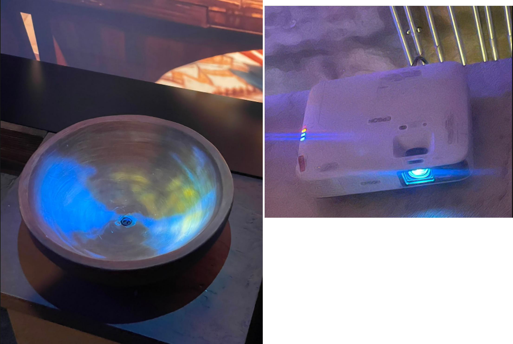
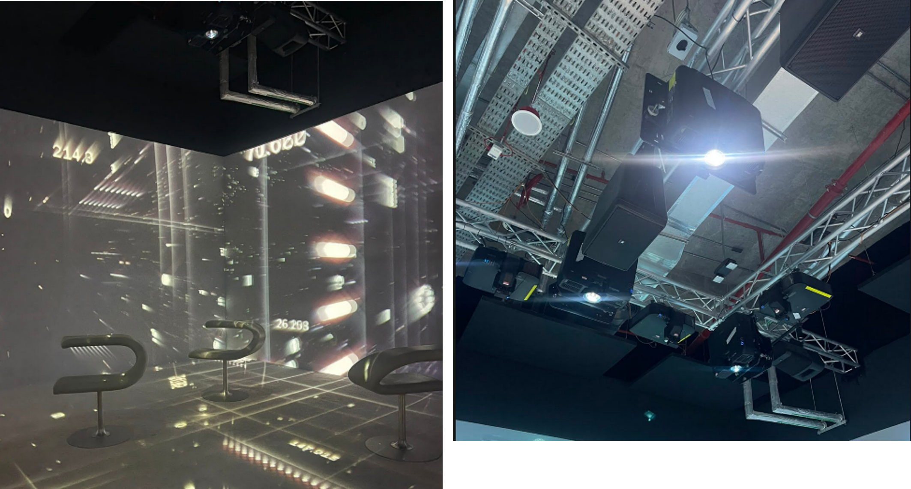
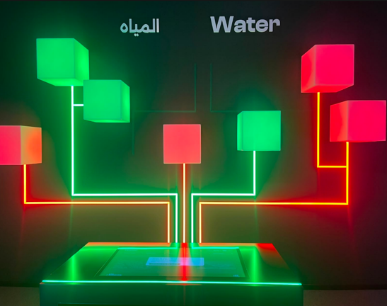
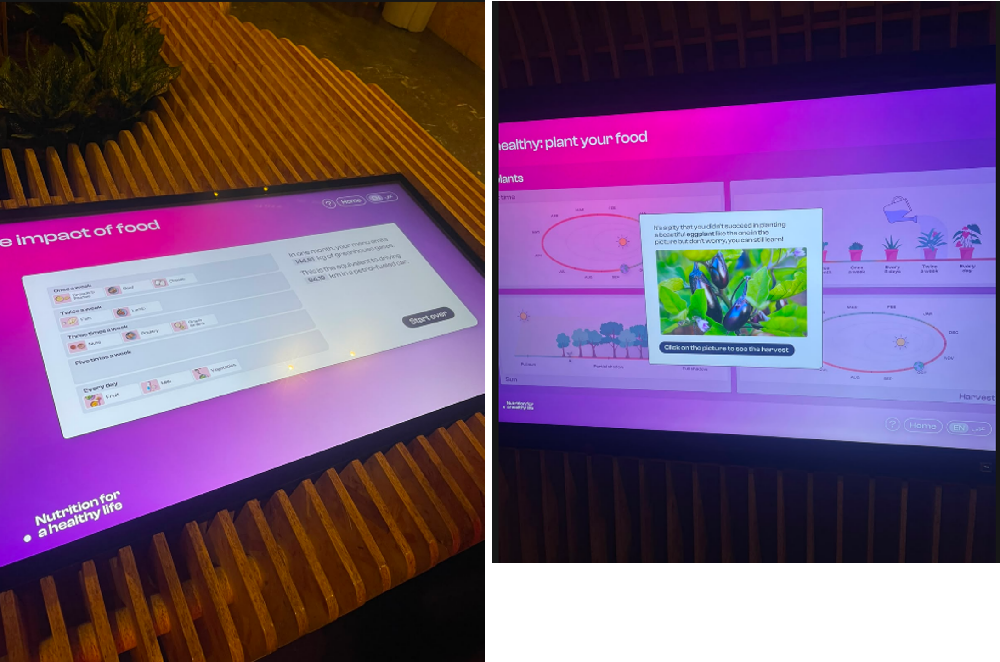
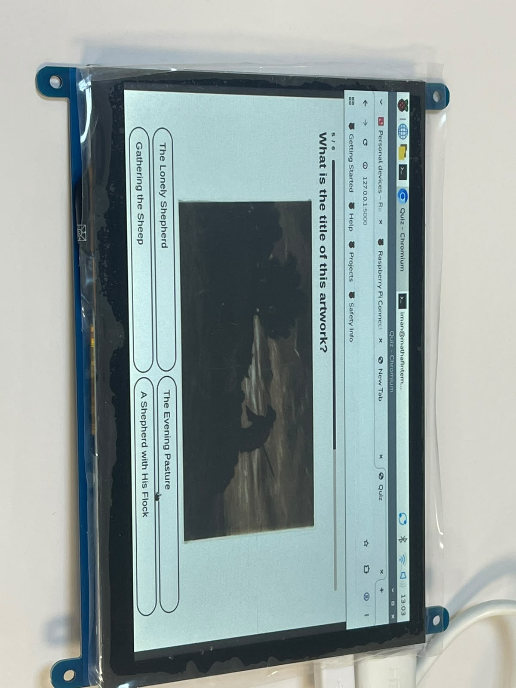
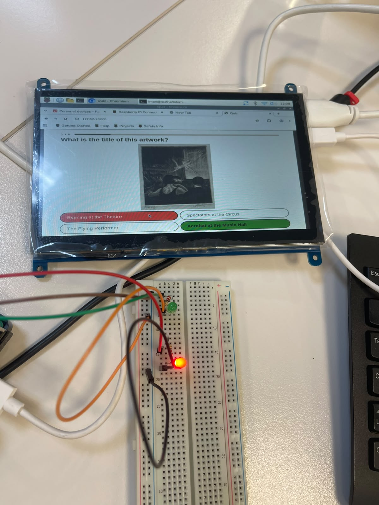
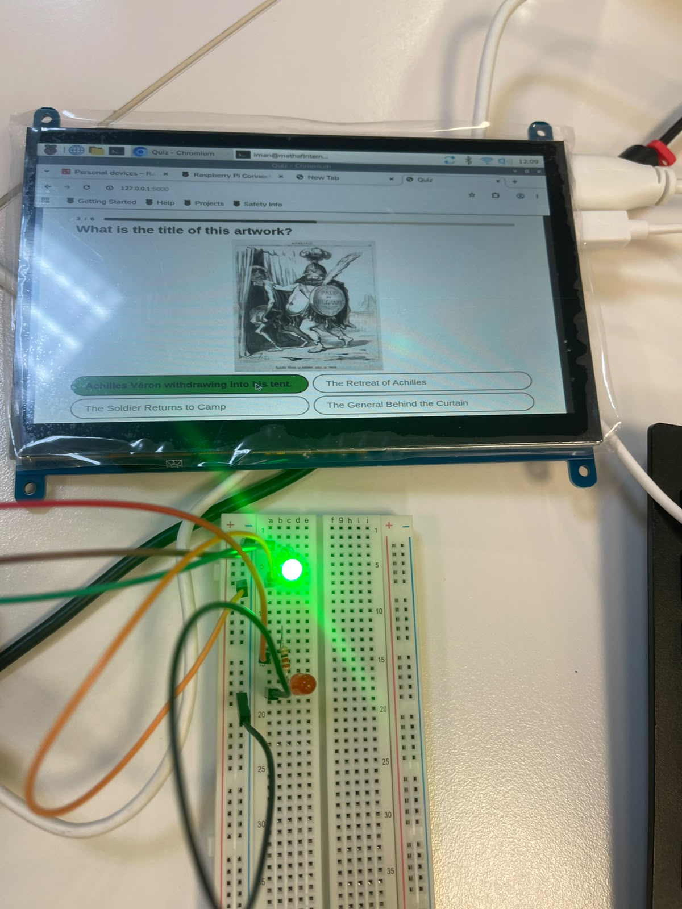

This week, I visited the LifeHub exhibition, which turned out to be one of the most interactive exhibitions I have experienced so far. The first thing I noticed was the audio setup, the speakers delivered high-quality sound, and their placement created an immersive soundscape for the visitor. Additionally, a projector was used to illuminate a bowl, making it appear as if it contained moving water. The narrated story asked a few questions and prompted visitors to interact with the display by placing their hands inside the bowl.

The next stop was installation consisted of a four-walled room displaying a film on how AI can contribute to the medical field. The experience was quite fascinating, particularly because of the total number of projectors being used.

The sustainability section, began with four interactive screens. Each screen featured five question quiz testing visitors on the most sustainable practices regarding water, energy, waste, and transportation. Corresponding to each topic, boxes mounted on the wall turned green for correct answers and red for incorrect ones.

The last station focused on how nutrition can improve your life, featuring two interactive screens. The first screen, titled "The Impact of Food," asked visitors to select the types of food they consume and their eating frequency. The second screen, "Plant Your Food," was an interactive quiz where you answered questions about optimal planting seasons, watering frequency, sunlight exposure, and harvest times.

The LifeHub exhibition is by far the most interactive exhibition I have ever visited, thanks to the wide variety of technology on display, from interactive screens to multi-projector setups and four-wall projection rooms. What makes it stand out is not just the technology itself, but how creatively and engagingly it was used to enhance the overall visitor experience.
After our exhibition visit, Marianne and I started working on our project idea for the next two weeks. We first brainstormed ideas individually to see what each of us brought to the table, and then sat down together to share our concepts and narrow down what we could realistically build.
We got inspired by our visit to the LifeHub exhibition, specifically the nutrition and sustainability sections. The mounted cubes that turned red and green with each question were really fun and engaging, so we decided to build our own physical quiz game inspired by that setup. For our dataset, we chose the Cleveland Museum of Art (CMA) API.
To design the quiz, we explored the CMA API to see which artwork attributes we could use for questions. We decided to let users select the topic they want to challenge themselves on—such as guessing the artwork's title, year, medium, country, or continent. From there, we selected which artworks to include and organized them by topic.
Next, we used Python to construct our question bank, which contained the question text, multiple-choice options, artwork images, and metadata. Because we were using a small 1024x600 touch screen, we had to resize all the artwork images so they would fit properly on the display.

Finally, we connected everything to the touchscreen to test it out. We ran into a few errors while trying to run the project on the Raspberry Pi, related to network connectivity and missing software packages
After solving those software issues, we got the project running, but then hit a wiring problem with the LEDs (which were designed to light up green for correct answers and red for wrong ones). At first, the LEDs didn't seem to light up at all. We double-checked our breadboard wiring and confirmed our connections were correct. The real issue turned out to be resistor power: the LEDs were actually working, but the current was so low that the light was too dim to see. Once we switched to 220-ohm resistors, the LEDs lit up clearly!

